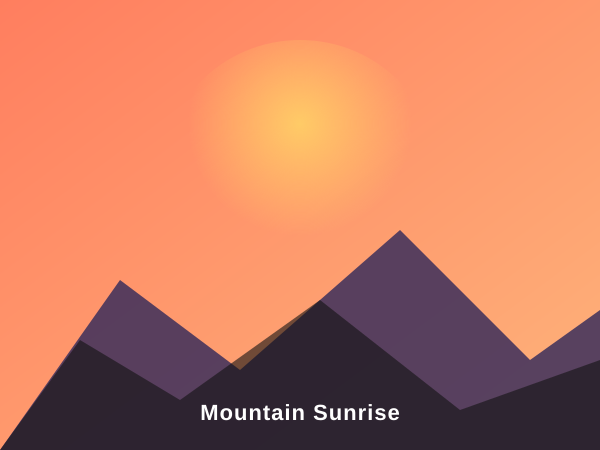
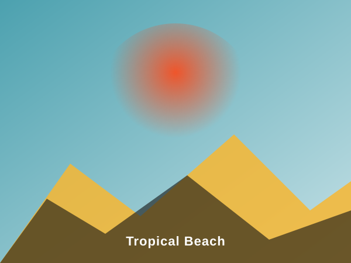
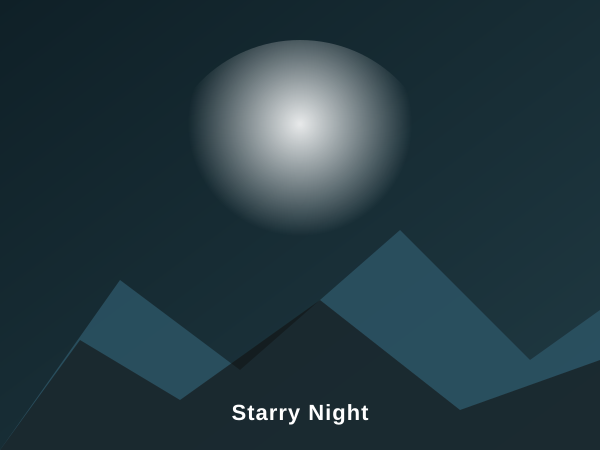

Welcome to our accessible, responsive gallery showcasing breathtaking natural wonders from across the globe. Each image highlights dynamic landscapes, from misty alpine peaks and cascading waterfalls to vibrant desert dunes and tranquil starry night skies.
This website implements progressive mobile-first responsive design principles with modern CSS Grid layouts. Experience how the gallery dynamically reorganizes from a single-column layout on mobile devices to a dual-column circular showcase on tablet viewports and a sophisticated multi-column gallery on widescreen monitors, complete with full support for reduced-motion and dark color scheme preferences.





